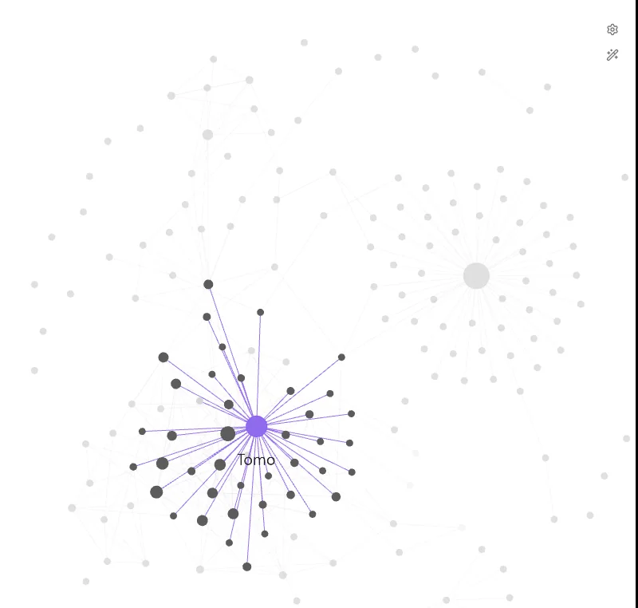
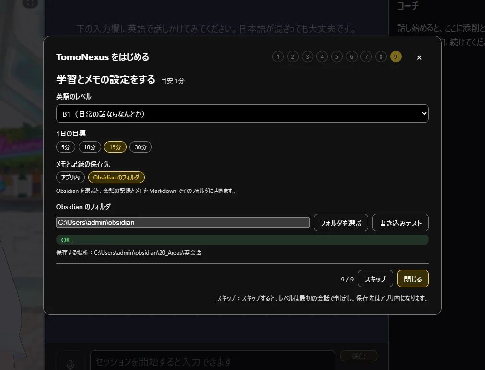
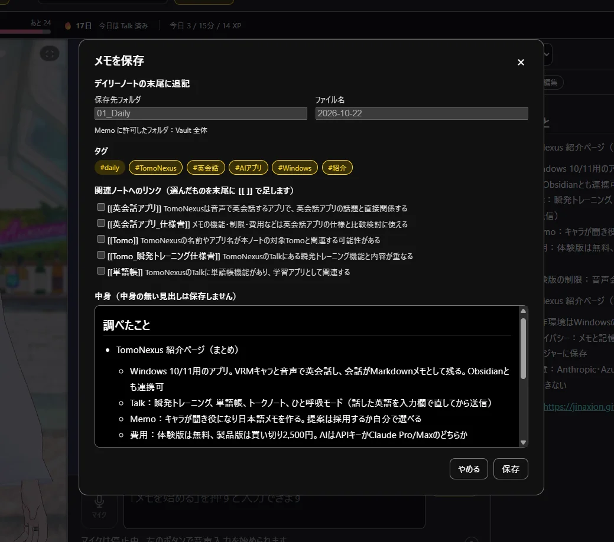
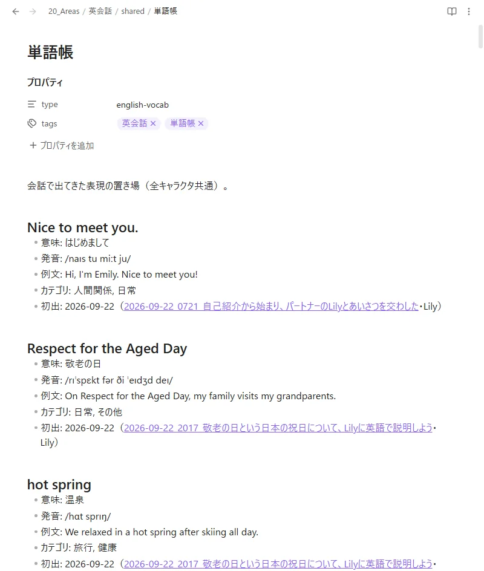
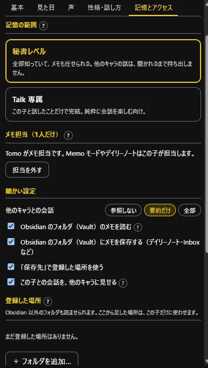

Obsidian guide
Obsidian と組み合わせて、「第2の脳」を育てる。
TomoNexus で話した内容は、メモも「記憶」も、ふつうの Markdown（.md）ファイルです。保存先を Obsidian のフォルダ（Vault）にすれば、話すたびにノートが増えて、つながっていきます。

Obsidian を入れて、Vault を用意する
Obsidian をインストールして、メモを置くフォルダ（Obsidian では「保管庫」「Vault」と呼びます）を作ります。もう使っている方は、いまの Vault をそのまま使えます。
- Obsidian の公式サイトからダウンロード
- Vault の作り方：保管庫の管理 - Obsidian ヘルプ
Obsidian を使わない場合は、保存先を「アプリ内」のままにしてください。メモはアプリ内に保存され、あとから .md で書き出せます。
こんな人に向いています
- メモを書くのが続かないけど、知識はためておきたい
- Obsidian を始めたけど、書く量が追いつかない
- 英会話の記録や単語帳を、ほかのメモと一緒に見たい
TomoNexus の保存先を、その Vault にする
初回のセットアップの最後（「学習とメモの設定をする」）で選べます。
- 「メモと記録の保存先」で Obsidian のフォルダ を選ぶ
- フォルダを選ぶ で、Vault のフォルダを指定
- 書き込みテスト を押して「OK」が出れば完了
会話の記録は Vault の中の 20_Areas/英会話 に書かれます（画面の「保存する場所」に表示されます）。
セットアップをスキップした場合や、あとから変えたい場合は、設定画面からいつでも指定できます。

Memo で話して、保存する
Memo モードでキャラと話して、まとまったら 保存。保存の前に、どこに・どんな形で書くかを確認できます。
- 保存先とファイル名：デイリーノートなら
01_Daily/2026-10-22の末尾に追記。アイデアなどは00_Inboxに新しいノートとして保存 - タグ：話の内容から候補を出します（frontmatter に入ります）
- 関連ノートへのリンク：Vault のノート名から、つながりそうなノートを提案。選んだものだけ
[[ ]]で末尾に足します - 中身：保存する前に確認・修正できます。中身の無い見出しは保存しません
リンクの候補を出すときに見るのは、ノートの名前だけです。AI は「提案」するだけで、採用するかはあなたが決めます。

Vault の中は、こうなります
TomoNexus が書くのは、主に次の場所です。どれもふつうの .md ファイルなので、Obsidian でそのまま読めて、手で直せます。
画像の「単語帳」は、会話から自動でできたノートを Obsidian で開いたところです。意味・発音・例文に加えて、どの会話で出てきたかへのリンクも付きます。

20_Areas/英会話/shared/単語帳キャラが Vault をどこまで読むかは、あなたが決める
キャラクタの設定の 記憶とアクセス タブで、キャラごとに「記憶の範囲」を選べます。
- 秘書レベル：Vault のメモも読んで、あなたの文脈を知ったうえで話します。メモも任せられます。ほかのキャラとの話は、聞かれるまで持ち出しません
- Talk 専属：そのキャラと話したことだけで完結。Vault のほかのメモは読みません
細かい設定で「Vault のメモを読む」「Vault にメモを保存する」を別々にオン／オフでき、Obsidian 以外のフォルダを追加することもできます（追加したフォルダは読み取りのみが既定）。
.obsidian の設定フォルダや、鍵・パスワードが入りがちなファイル（.env・*.key・*.pem など）は、最初から読みません。範囲を狭めても、これまでの会話の記録は消えません。

Advanced
発展：同じ Vault を Claude にも読ませる
TomoNexus で育った Vault は、Claude Code など Vault を読める AI ツールにも、そのまま渡せます。あなたの会話・メモ・学習記録を知った「相棒」として、仕事や勉強にも使えるようになります。
Claude Pro / Max で TomoNexus を使う方は、Claude Code のインストールが必要なので、その参考にもなります。
参考動画：Obsidian × Claude Code で“第2の脳”を作る方法むっちょ【Claude Code攻略】さん（YouTube）・7:41〜「第2の脳を賢くする3つの方法」※ TomoNexus とは別の方が作った動画です。
FAQ
よくある質問
いま使っている Vault に入れても大丈夫？
大丈夫です。TomoNexus が書き込むのは、会話の記録（20_Areas/英会話）と、保存のときに確認したメモの保存先だけです。既存のノートを書き換えるのは、デイリーノートの末尾に追記するときだけです。
読む範囲は、キャラごとの「記憶とアクセス」で決められます。
Vault を Google ドライブなどで同期していても使える？
使えます。保存は一時ファイルを書いてから置き換える方式で、同期と保存がぶつかったときは、元のノートを上書きせずに別名（-conflict 付き）で保存します。
AI に Vault の中身が全部送られる？
いいえ。会話のときに Claude へ送るのは、いまの話に関係しそうなノートの一部だけです。どのノートを読めるかは「記憶とアクセス」の範囲に従い、Talk 専属のキャラには Vault のメモは渡りません。
データがどこを通るかは しくみ のページをご覧ください。
Obsidian を使わないと損？
いいえ。アプリ内保存でも、メモ・記憶・単語帳・学習記録はすべて使えます。あとから Obsidian に切り替えたくなったら、設定で保存先を変えられます。